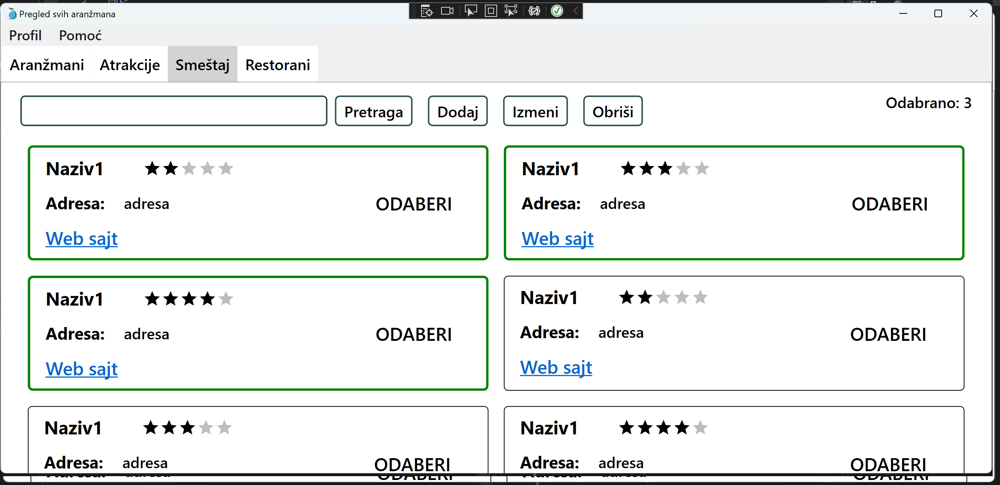

Prozor za agente
U gornjem levom delu aplikacije, ispod alatne trake, možete pronaći tabove:
- Aranzmani
- Atrakcije
- Smestaji
- Restorani
Klikom na svaki od pojedinačnih tabova, otvoriće Vam se odgovarajući prozor sa pregledom svih trenutno ponuđenih opcija.

U svakom od pregleda imate listu odgovarajućih elemenata (aranžmani, restorani itd.) koje možete da pogledate, ažurirate ili obrišete.
Klikom na dugme "ODABERI" selektovaćete i dodati taj element u obradu, nakon čega možete jedan ili više elemenata da ažurirate ili obrišete.
Ako želite više elemenata odjednom da obrišete, kliknite na ODABERI dugme na svakom od elemenata, i posle kliknite na dugme OBRIŠI.

U gornjem desnom uglu možete da pratite koliko ste elemenata za obradu odabrali.
U slučaju da želite više elemenata odjednom da izmenite/ažurirate, nakon što ih sve odaberete i kliknete dugme IZMENI, otvoriće Vam se forma za izmenu, na čijem vrhu možete da pratite na kojem se po redu elementu trenutno nalazite.
Ako se trenutno nalazite na pregledu svih aranžmana ili pregledu svih atrakcija, takođe možete klikom direktno na element (ne na dugme ODABERI) da otvorite detaljan pregled elementa.
Na samom početku pregleda nalazi se polje za pretraživanje, radi bržeg pronalažženja elemenata za obradu.